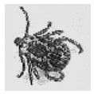
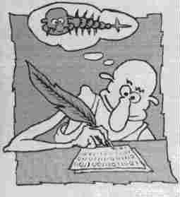

| Занимательная вирусология. Часть 3 |
|---|
[ На обложку "Занимательной вирусологии" ]
Вашему вниманию предлагается третий выпуск "Занимательной Вирусологии". Не расстраивайтесь, что какая-нибудь тема не затронута. Все еще впереди!
|  |
|
Заодно загляните сюда:
|
| 1. Книголюбу |
|---|
В разное время в разных городах вышло несколько книг, освещающих разные вирусологические аспекты. Если интересуетесь темой, можете поискать. По крайней мере в библиотеках крупных городов они точно есть.
Безруков Н.Н. Компьютерная вирусология / Киев: УРЕ, 1991.- ??? c.
Касперский Е. Компьютерные вирусы в MSDOS / M.: Эдель, 1992. - 175 с.
Зегжда Д., Мешков А., Семянов П. Как противостоять вирусной атаке / СПб: BHV, 1995.- 316 c.
Охрименко С.А. Защита от компьютерных вирусов/ Кишинев : Штиинца, 1991.- 100 с.
Расторгуев С.П. Инфицирование как способ защиты жизни. Вирусы: биологические, социальные, психические, компьютерные. - М.: Яхтсмен, 1996.- ??? с.
Файтс Ф. Компьютерный вирус: проблемы и прогноз/ М.: Мир, 1993. - 175 с.
А это черный список. Первая книжка давно стала веселой легендой вирусологии. А вот ко второй у меня особое отношение - мало того, что ограбили, так еще и запихнули под одну обложку вместе с откровенно деструктивными материалами. Ну ладно, пусть хотя бы таким образом мои разработки дойдут до того, кому они действительно могут пригодиться. Итак:
Хижняк П.Л. Пишем вирус... и антивирус: для IBM-совместимых компьютеров / М.: INTO, 1991.- 89 с.
Гульев И.А. Компьютерные вирусы. Взгляд изнутри / М.: ДМК, 1999. - 304 с.
Коваль И. Как написать компьютерный вирус: практика программирования на асемблере / СПб:Символ Плюс, 2000.-189 с.
Козлов Д.А., Парандовский А.А., Парандовский А.К. Энциклопедия компьютерных вирусов / М: Солон-Р, 2001.- 457 с.
Гошко С.В. Энциклопедия по защите от вирусов / М.: СОЛОН-Пресс, 2004. - 301 с.
Гошко С.В. Теория и практика защиты от компьютерных вирусов / М.: СОЛОН-Пересс, 2009.
| 2. Персонаж одной сказки |
|---|
Слышали ли вы такое прозвище - LovinGod? Нет? Странно... Между тем, фигура очень колоритная и в своем роде уникальная. LovinGod - духовный лидер Stealth Group - крупнейшей группировки вирусописателей, действующей на территории ex-USSR. С ним мало кто знаком лично, кроме очень узкого круга друзей. Практически ничего не известно о том, как его на самом деле зовут, как он выглядит... Забавно, что нет достоверных сведений даже о том, какие вирусы он написал сам, да и написал ли что-либо вообще? Зато мы можем имеем возможность составить образ LovinGod-а по его многочисленным высказываниям, опубликованным в журналах Infected Voice, Infected Moscow и в эхо-конференциях ФИДО.
Цитаты сей демонической фигуры расположены в хронологическом порядке, так что каждый может проследить эволюцию взглядов LovinGod-а на протяжении последних 5-ти лет.
Саморазмножающийся механизм занимается Саморазмножением. Для этого НЕ НУЖНЫ никакие дополнительные эффекты, тем более, разрушительные. Представьте себя на месте вируса: занял квартирку, обжился, растишь детей, выпускаешь их в большую жизнь из своего дома, и тут взял - и взорвал все это к...
Мы не станем писать разрушительные вирусы по моральным соображениям (ни от имени клуба, ни как-нибудь иначе), потому как нас не интересуют вышеописанные...
Не знаю как вы, а УК мы все-таки чтем, как бы вам этого не не хотелось...
...уважать не за что - принципиальная травоядность их изделий говорит о трусости, самоафишировании и "политической корректности" авторов.
А работу для мозгов мы себе нашли и без вас - это саморазмножающиеся механизмы, и врядли кто найдет что-то более интересное в области программирования.
А тут - просто дружеское общение единомышленников, несмотря на то, что мы отличаемся друг от друга еще больше, чем ФИДО от сети друзей. Тем не менее, я не наблюдал у нас ни одной ссоры и ни одного обиженного; клуб наш не развалился, он продолжает расширяться, также за пределы Киева и Украины.
Комментарий: следующие три высказывания касаются одного и того же человека, только интервал между 2-ым и 3-им примерно 2 года, в течение которых, кстати, LovinGod не имел с ним никаких отношений.
...Очень упорный молодой человек...
Перу этого талантливого вирмэйкера принадлежат многие ремэйки известных полиморфиков, а также множество собственных разработок.
Домашний мальчик с претензией на оригинальность очень скоро выучился на переделках вещей Eternal Maverick'а, и его глумливая кличка замелькала...
Один из основных критериев отбора в клуб - отсутствие "правильности" , цивильности и обывательского мышления.
Гораздо больший приступ тошноты вызывает сборный психологический портрет вирмэйкера - эдакое скопище ущербных личностей, которым в конце-концов удается себя реализовать, превращаясь в обывательскую лужу гнили, которая пахнет далеко не вирмэйкерством и киберандеграундом.
HЕУЖЕЛИ ВСЕ ВИРМЭЙКЕРЫ УЩЕРБНЫ? Да, практически все.
Сидел бы себе на своей жене и штамповал арийцев.
Комментарий: в следующее высказывание в качестве вложеной цитаты использованы слова другого вирусописателя.
" Мне плевать на всех вирмэйкеров мира, когда я жду звонка от своей любимой девушки." Тошнота.
Этой фразой хотелось бы открыть еще один класс вирмэйкеров - сексуально озабоченных... " Я хочу научиться вирмэйкерству, чтобы от меня тащились бабы." (С) неважно, но типично. Они пишут вирусы, посвящая их своим жабам, - слюнявые создания, ламерящиеся ради того, чтобы обладать своей б.. любимой. Естественно, никакого прогресса на " вирусной сцене" от таких ждать не стОит - их удел - женатая жизнь и выводок будущих обывателей - мечта всей жизни.
...чем меньше человек разбирается в программировании и вирусологии, тем громче он кричит, дабы придать своим словам хоть какой-то вес. Обс..ая других - возвышаешься сам. Вот ваш принцип.
Да, то самое имя божье, которое вы почему-то так любите, несмотря на то, что данный God изобрел холеру и прочую дрянь для массового уничтожения народа. Поклонение или смерть. И поэтому понятия совсем не совместимы - бог и любовь.
Что касается фашистского или порнографического содержания - по-моему, запреты подобных публикаций В ОБЩЕСТВЕ ЗДРАВОМЫСЛЯЩИХ ЛЮДЕЙ вовсе неуместны.
Жизнь - это игра, игра по неписаным правилам. И совершенно не значит, что если тебе сделать также больно, как ты кому то сделал, то делать больно другим - плохо в принципе.
...я как автор программок (0.5-5 кБ)...
Писывал когда-то я такие весчи : Фаг - найти три байта, переставить, обрезать. Ревизор - записал длины и пр., сверил через ДОС, БИОС -не то- обругался. Сторож - повис на инте и ори, главное, почаще - виррус, виррус!...
Начну с себя. Не раз задавался этим вопросом сам, почему из множества занятий в программировании выбрал именно это. В вирмэйкинге я человек не случайный и пришел сюда не из необходимости кому-то напакостить. Я прошел через увлечение языками высокого уровня, но не нашел их интересными.
Я изучаю и создаю СМ, потому что мне это интересно, это интересно всем моим коллегам, это очевидно, так как написание вирусов не приносит прибыли; написание вируса - процесс чисто творческий. Спросите у поэта, для чего он пишет стихи. Неуместный вопрос, не правда ли ?
...назвали меня неплохим программистом ( да, я умею Паскаль и Си, ФоксПро, Форточки и даже Висуал Бейсик, про Ассемблер я теперь молчу - из одной конторы я был уволен после того, как просматривал хекс-дамп EXE-шника)...
Не буду иронизировать, может и меня в 48 пробьет Aidstest свой написать.
С момента создания STEALTH group прошло четыре года. Тогда я, подобно вам, начинающий вирмэйкер, пытался найти хоть какую -нибудь информацию о вирусах.
Трудное детство, некомпьютерные игрушки... Hа IBM'е начал программировать только со 2 курса института. ПисАл игрушки, утилиты, прочее дерьмо и даже антивирус. Потом добрался до вирусов...
Главное - мне удалось переосмыслить все, чем меня программировали, и выработать свои взгляды на жизнь, - взгляды гостя этой планеты - взгляд со стороны на этот копошащийся и упивающийся своей собственной серьезностью дурдом.
Надеюсь, LovinGod не обидится, прочитав все это; в конце концов на кого обижаться-то - на себя? Если, конечно, он все-таки существует... :-)))
| 3. Читали -2 |
|---|
А вот любопытный фрагмент из еще одной книжки.
...не самое большое удовольствие - сидеть с кастрюлей на голове.
Экраны шлема темны и безжизненны.
Я отстегнул крепление и снял свою потрепаную "Sony".
Первым делом посмотрел на дисплей - та же картина.
Черт.
- Вика, старт! Включись. Работаем.
Надежда на то, что оружие Темного Дайвера просто отключило питание компьютера, была слабая.
И все-таки я нажал кнопку питания и подождал минуту.
Машина не оживала. Даже не пыталась включиться.
Отцепив все провода, я вытащил системный блок, стянул корпус, который никогда не
закручивал, и уставился внутрь. Будто мог что-то увидеть глазами.
На вид все было цело. Дым не валил, винчестеры не разлетелись на кусочки,
револьверных пуль, застрявших в материнской плате, тоже не наблюдалось...
Вау, как это похоже на проявления Чернобыльского вируса! Вы, конечно, уже догадались - да, это опять С. Лукьяненко. Виртуальные сражения продолжаются. И не только виртуальные...
Книжка называется "Фальшивые зеркала".
| 4. Медицинский случай-3 |
|---|
Собственно говоря, смотрите сами. Сабж похудел на несколько байт, но по-прежнему распознается как зараженный "вирусом" Ninnyish.Generic.
; Ninnyish.Generic.13 (c) DrMad, 1999
Start:
call Next
Next:
pop di
sub di, 3
lea di, Start[bx]
movsb
ret
End Start
Кстати, это абсолютный мировой рекорд по длине "вируса"! Существующие вирусы такой же длины являются оверврайтерами, и зараженные ими файлы просто удаляются. А вот этот - "лечится" ! =8-) !!!
| 5. Рукопись, найденная в сортире |
|---|
Прежде, чем писать вирусы, честно ответь себе - нет ли у тебя сходства с автором нижеприведенных "Записок"?
Все, решил окончательно и бесповоротно. Буду писать вирусы.
Берегитесь, ламеры!
Начал писать первый свой вирус. Вдруг вспомнил, что все
вирмеры обязательно пьют пиво. Сходил на кухню за двумя банками
"Балтики". Скорость написания вируса заметно возросла.
Ура! Уже готова первая строка! Необходимо отдохнуть и послушать
музычку. Кстати! Настоящие вирмеры слушают исключительно
"Гражданскую оборону". Надел наушники и затащился. Правда
вместо "Обороны" запели какие-то девочки: не то "Блестящие",
не то "Стрелки"... а может "Карамельки". Наплевать, главное,
что не Бетховен.
Уф! Написал уже две строки. Нелегкая это оказалось работа.
Зато результат будет офигенный! Представляете - сидят мэны в
Гренландии и в Австралии, вдруг компухтеры начинают дымиться,
все с винчестеров вытирается и появляется надпись: "Fak u.
Привет из Козлопупинска!" ФБР и ФСБ сбиваются с ног, но им никогда
не догадаться, кто автор. И никто не будет знать, я
только Ваське скажу. Класс!
Позвонил Ваське. Он сказал, что правильно не "Fak", а
"Fuck". Ламерюга он позорный, вирусов писать не умеет! Не буду
ему больше звонить.
А внутри вируса будет строчка: "Блуди факер". Это меня так
зовут теперь. Пускай поищут! А еще у меня будет своя группа, в
которой я буду главный, и у нас в Интернете будет свой сайт.
На первой страничке череп с костями, Гитлер и побольше крови!
И все тексты - зеленым по красному. Обожаю это цветосочетание,
потому что от него моя бабушка всегда хватается за сердце, а
кошку начинает тошнить. Круто, мля!
Пишу третью строчку. Да, нелегка вирмерская доля. Все что-то
мешает и тяготит. Вот Васька, ламер тупой, небось сейчас со
Светкой гуляет и ни о чем не думает. Н-да... все мы гости на
этой планете. И прожить жизнь надо так, чтобы мучительно не
хотелось...
Увы, друзья и товарищи. Я ухожу с VX-сцены. Навсегда.
И не надо меня отговаривать...
...в конце концов, после двух банок пива целый час сидеть
за столом и не выходить из комнаты - это выше моих сил!
Рукопись, найденная в сортире

( Рис. А. Щербакова, Самара )
| 6. Кроссворд |
|---|
А вот кому свежий кроКсворд?
По вертикали:
1. Место куда посадили бы вирусописателя Чен Инг Хау... если бы он жил в Российской Империи лет 150 назад.
2. Неофициальное название вируса Win32.CIH.
3. Привиденьице, обитающее в Москве на улице Героев Панфиловцев.
По горизонтали:
4. Область памяти, размещающаяся по адресу PSP:2Ch.
5. Город, который увековечен в названии вируса, одним из первых использовавших для заражения ЕХЕ-файлов
идею модификации таблицы перемещаемых ссылок.
7. Состояние, в котором пребывает вирус, пытающийся заразить програму на CD.
По диагонали:
6. Автор вируса, предлагавшего юзеру "засунуть 10 рублей в дисковод ".
8. Граф.
9. Автор первого опубликованного в печати пособия по написанию вирусов.
10. Популярный футболист, игравший за команду города, в котором начинал свою "трудовую"
деятельность LovinGod.
11. Свойство, которое необходимо иметь юзеру, дабы заподозрить наличие вируса на
безупречно работающем компьютере.
Имя первого человека, правильно решившего этот кроссворд, будет увековечено... на этой страничке. Шлите ответы! :-)
| 7. Как я лечил OneHalf |
|---|
Инда... были дела. Собственно говоря, с этой истории много лет назад началось мое духовное возрождение. :-)
Это было пять лет назад. Шел декабрь. Я тогда работал системным программистом в ВУЗовской лаборатории, гонял студентов и восстанавливал изуродованные в результате студенческих "пошутиловок" системы и приложения. Регулярно приходилось выковыривать из AUTOEXEC.BAT запуск программы REBOOT, вытирать из "секретных" каталогов многомегабайтные игрухи, вычищать с дискет и винтов KAKASHK-и и M2C.
И вот однажды, уже в 20-х числах, когда до конца семестра осталось не больше недели, девчонки-лаборантки прибежали ко мне с криками, что некоторые машины не грузятся. Достаточно быстро я обнаружил, что дурят машины, в AUTOEXEC.BAT которых вставлен запуск программы CHKDSK. (Кстати, это научно-медицинский факт, что эта программа жутко не любит, когда ее заражают любым вирусом). Я запустил старый добрый AidsTest... естественно, результат был нулевым. Ага! - сказал я себе и пошел за более свежим антивирусом, который надыбал накануне. Я скопировал его на винт, запустил и был неприятно изумлен его истошным воплем о том, что он заражен неизвестным вирусом. Выходит, мне вместе с антивирусом подарили заразу??? (Я тогда еще не знал, что заражаются при копировании и источник на дискете, и результирующая программа на винте).
Имея небольшой опыт ковыряния в вирях (Vienna, M2C, Later, Stoned...), я смело выхватил из кобуры любимый SOURCER и ринулся в бой. Очень скоро выяснилось, что вирус шифруется с переменным ключом, а фрагменты цикла расшифровки раскидывает кусками по телу жертвы. Я понял, что в первый раз в жизни столкнулся с настоящим полиморфным вирусом! Облизываясь от нетерпенья, я принялся изучать его код и сравнительно быстро (за пару часов) наваял обнаружалку, которая пыталась расшифровывать тело и сравнивать его байты с сигнатурой. Прогнав обнаружалку по всем машинам (тогда их было 20 штук в двух дисплейных классах), я выяснил, что зараженные программы живут по крайней мере на 12-ти из них.
Информация об эпидемии была доведена до начальства, начальство велело закрыть классы. Студенты, которые как и всякие нормальные люди предпочитают начинать заниматься учебой в последние дни семестра, собрались ломать двери и бить морду обслуживающему персоналу. Домашние компьютеры в те древние времена были далеко не у всех.
А я, весь из себя ужасно занятой, сидел в это время и писал лечилку. К следующему утру лечилка была готова, я (наивный такой) приперся к 8-ми утра, почистил машины и радостный отрапортовал, что все ОК и пускай готовят ордена и ценные подарки. Но все симптомы компьютерного заболевания проявились вновь, стоило студентам усесться за машины. В течение пары я заставлял злых парней и несчастных милых девушек прогонять через мою лечилку свои дискеты. И действительно, несколько зараженных программ было обнаружено и обезврежено. Но симптомы проявлялись и на абсолютно чистых (на мой взгляд) машинах!
Именно тогда я первый раз упал духом и попросил админа местного Релкомовского узла послать SOS на деревню дедушке, Константин Макарычу... тьфу!... Дмитрий Николаичу, который Лозинский.
А в дисплейных классах творился бардак. Их вновь закрыли. Половина машин при перезагрузке сообщала, что мол "Dis is one half". Я метался от машины к машине, обнаруживая DiskEdit-ом фрагменты вирусного кода на 0-й дорожке винтов и, холодея, понимал, что вирус на самом деле много-много сложней, чем мне померещилось вчерашним вечером.
Я взял кучу умных книжек и засел за подробное изучение кода вируса. Пришлось изучить структуру загрузчиков, структуру памяти MSDOS... Я провел кучу экспериментов, заражая и форматируя винт на 40Мб... Я научился блокировать вирус в памяти... Я написал фрагмент, вычищающий вирус из загрузчика... Прогнав свою программу через все 12 зараженных машин, я почему-то угробил информацию на 2-х винтах насмерть (теперь-то я знаю - почему). Короче, я оттягивался по полной программе, и когда вечером мне принесли скачанный из самого Санхт-Питербурху "супер-пупер-антивирус Web", у меня уже не хватало сил даже запустить его.
Я запустил его на следующий день. Вычистил им еще несколько зараженных программ, пропущенных моей не слишком совершенной лечилкой и угробил еще два компьютера, которые перестали грузиться после Web-а в точности так же, как и после моей программы (дело было в том, что расшифровку дорожек винчестера Данилов в те времена предлагал делать Пушкину). После всего этого я пошел к начальству и с огромным облегчением услышал приказ: все винты форматировать нахрен!
А вечером пришел очень "своевременный" ответ от дедушки Лозинского. Этот файл я храню до сих пор, как раритет:
From: loz@dials.ru
To: root@faculty.volgacom.samara.su
Subj: onehalf
Уважаемый господин Климентьев!
Вам придется найти программу Web Игоря Данилова, которая умеет лечить этот вирус.
Ну вот и все. С тех пор я занялся охотой на вирусов более серьезно. Изучил этого гада (OneHalf) досконально, а дальше пошло-поехало. И вам рекомендую, вместо того, чтобы писать свою заразу. Увлекательнейшая вещь!
А вот здесь лежит текст той самой моей недописанной лечилки as was на языке Modula-2. Компилировать и тем более запускать не советую :-). Примите этот текст как доказательство, что историю эту я не выдумал, и она случилась на самом деле.
И еще в этом же зипе лежит листинг вируса, который я позаимствовал из IV-5. У меня в свое время в результате вышеописанных страданий получился примерно такой же, но - 1) на бумаге и 2) исчирканный карандашиком. Только имейте в виду, если будете его читать: слово "команда" на самом деле пишется с одной буквой К, а "дрозофила" - с одной буквой Л. :-)
| 8. Под землей тебя найдем, под водой достанем? |
|---|
Получил я такой вот отклик на "Занимательную Вирусологию" и решил рпубликовать, вставив свои комментарии. Поясню - речь идет о том, что эвристические анализаторы кода программ, используещиеся в современных антивирусах, не идеальны. Нередко антивирусы подозревают заразу там, где ее нет; подчас новый вирус не вызывает у них никаких подозрений.
Понятное дело, что авторы антивирусов стараются улучшить эвристические алгоритмы, а их оппоненты - вирмеры - придумать новые способы обмана. Необычайно интересно наблюдать за этой борьбой брони и снаряда! Итак, предоставляем слово "снаряду".
Привет, доктор Мэд!
Классная у тебя страничка, но почему так редко обновляется? ;-(
Спасибо за комплимент. Страничка будет обновляться. Но пока страшно некогда.
Я занимаюсь изучением вирей и в связи с этим хочу подкинуть матерьяльчик по обману супер/дупер навороченных антивирусных прог. (проверялись: AVP, DrWeb, NAV, TbAV, MScan ;)
Думаю, не открою страшного секрета, если намекну: все, что не доделано в эвристике MScan-а, теперь успешно реализуется в AVP :-)
1. До недавнего времени (2/11/99) в ходу был следующий трюк:
xor ax, ax
mov ds, ax
mov bx, ds:[46Ch]
Heuristics_must_die:
mov ax, ds:[46Ch]
sub ax, bx
jz Heuristics_must_die
Ясный пень, после этого AX = 1, но эвристики/эмуляторы/анализаторы
здесь обламываются и считают AX = 0.
Дальше, я думаю объяснять не надо, возможны варианты использования
значения AX (например в ключе расшифровщика).
Поясняю: по адресу 0:46Ch BIOS хранит счетчик тиков таймера, обновляемый с частотой 1.12 МГц. Обман эвристического анализатора основан на том, что эмулятор не моделирует работу этой ячейки памяти.
Но недавно AVP научился проходить этот трюк и специально для него:
2. in al, 40h
mov ah, al
out 40h, al
Avp_must_die:
in al, 40h
sub al, ah
jz Avp_must_die ;Вечный цикл (для AVP)
В порту 40h также хранится счетчик тиков, но обновляется он напрямую микросхемой таймера.
Далее, исследования не стоят на месте, появился универсальный облом
для всех (вышеперечисленных) антивырей:
3. mov al, 16h
out 70h, al
in al, 71h
mov ah, al
mov al, 15h
out 70h, al
in al, 71h
sub ax, 280h ;Ну, в смысле, памяти 640k ;)
Зесь AX=0, а у антивырей получается нечто иное.
А здесь используется чтение конфигурации компьютера, записанной в CMOS-памяти. Эмулятор опасается читать из портов... ну и правильно делает. :-) Кстати, в псевдовирусах семейства TRICK.Explorer я тоже использовал для обмана эмулятора чтение из CMOS, только не размера базовой памяти, а номера столетия (см. ЗФ-3).
На сем заканчиваю. Желаю успехов, Barry (btw@mail.ru).
Спасибо, Barry! Но тема ведь не закрыта, а?
| 9.Что такое вирус - 2 |
|---|
С момента появления термина "компьютерный вирус" прошло уже больше 15 лет. Количество определений понятия увеличивается (даже я попытался изобрести свое определение), а качество их уменьшается. Вот несколько примеров.
В.Э.Фигурнов, автор "IBM PC для пользователя"
...Это специально написанная небольшая по размерам программа, которая может приписывать себя к другим програмам (т.е. заражать их), а также выполнять различные нежелательные действия на компьютере.
Газета "СпидИнфо", 6/2000
...Появились компьютерные вирусы, которые передаются человеку! Первый симптом заражения - расстройство эрекции...
Г. Баранов, журнал "Компьютеры Днепропетровска"
...искусственно созданный вредный код...Достаточно примеров? Я думаю, что нетрудно заметить тенденцию - объявить главным свойством вирусов их вредность. Так и кажется, что последним в этом ряду определений должно стоять примерно такое:
... омерзительнейшая вещь, которую производят маньяки и бандиты...
Используется старинный прием: для того, чтобы искоренить явление (даже если оно действительно не слишком хорошее), его якобы надо сначала многократно оболгать, сделать в глазах доверчивой общественности безобразным и отвратительным, а потом с чистой совестью выжечь каленым железом под приветственные клики этой самой общественности.
Хотя я не отношу себя к числу тех, кто занимается компьютерным бандитизмом, тем не менее я считаю такую позицию упомянутых и многих прочих авторов прежде всего - нечистоплотной.
Теперь приведу ряд определений, составленных ведущими вирусологами - людьми, которые на самом деле борются с электронной заразой, а не разжигают низменные инстинкты околокомпьютерной толпы. Я их собрал из разных книг, журналов (например, Alive) и пр.
Е. Касперский, автор антивируса AVP:
... программа (т.е. некоторая совокупность выполняемого кода), которая может создавать свои копии (не обязательно полностью совпадающие с оригиналом) и внедрять их в файлы, системные области компьютера, вычислительные сети и т.д. При этом копии сохраняют способность дальнейшего распространения.
Фред Коэн, теоретик вирусологии, автор термина "компьютерный вирус":
...программа, которая может инфицировать другие программы, модифицируя их с целью внедрения в них возможно измереннной копии себя.
Весселин Бончев, известный вирусолог:
...это последовательность символов, которая, будучи интерпретирована компьютером, добавляет себя к другим символьным последовательностям, чтобы компьютеры, интерпретируя их, в дальнейшем рекурсивно распространяли (возможно модифицированную) исходную последовательность.
Уильям Уолкер:
...это последовательность (или набор последовательностей) символов, которые, будучи исполняемы или интерпретируемы при определенных условиях в определенной среде, будут производить возможно измененный, но функционально подобный код последовательности (или набора последовательностей) и будут помещать эту копию в такое место, где она в дальнейшем сможет получить доступ к выполнению или интерпретации при определенных условиях.
Роберто Реймонд:
...набор инструкций, которые будучи исполняемы или интерпретируемы, берут на себя управление средой. Если это произошло, то эти инструкции будут при определенных условиях производить как минимум одну копию исходной последовательности, идентичной или модифицированной, внедряя ее/их в среду с надеждой, что если она будет исполняться или интерпретироваться, то повторит вышеописанные действия как минимум еще один раз.
Чувствуете разницу?
| 10. Еще о компьютерной живности |
|---|
Я считаю, что вирусы безо всяких скидок - вариант компьютерной жизни. Но встречаются и другие, весьма занимательные образцы. Конечно же, все слышали про Конвеевскую "Жизнь"
А вот пара игрушек из серии "Программный бой":
Это вот что такое. Пишется программа на Си- или Паскаль-подобном языке. Например, такая:
main() {
int c,a; a=0;
while(1) {
while(!(c=scan(a,5)))
a=a+10;
if(c!=0)
cannon(a,c);
else
drive(a+180,10);
drive(a,10);
}
}
|
PROCEDURE EXAMPLE; VAR a,a:INTEGER; BEGIN a:=0; WHILE TRUE DO BEGIN REPEAT a=a+10; c:=scan(a,5); UNTIL c<>0; IF c<>0 THEN cannon(a,c) ELSE drive(a + 180) ; drive(a,10); END END; |
Здесь
Потом вы (или кто-то другой) тоже пишет свою программу. Вы запускаете от 2-х до 4-х таких боевых программ на одну арену в случайных позициях, и они начинают искать друг друга, стрелять, уворачиваться, прятаться и пр. Можно придать им разные характеры, игровые стили: например, стиль Dinamo (Кyiv) и Spartak (Moscow). :-) Побеждает тот, кто остается в живых - классический закон существования живых организмов. На мой взгляд, большинство компьютерных вирусов гораздо тупее этих боевых программ, по крайней мере матч Counter-Sniper выглядит гораздо занимательней, чем Khizhnyak-Kaspersky. Если программы примерно равны по силам, можно устроить турнир и определить их относительную силу в процентах, например: 55% на 45%.
На станицу выложены минимальные комплекты. Спишитесь со мной, я вышлю полные - со средой отладки, многочисленными примерами программирования и пр.
| 11. Dura lex sed lex - 2 |
|---|
Как известно, в мире издаются толстые тома, посвященные разоблачению распространенных заблуждения. Например, что Америку открыл Колумб (на самом деле, норманы бывали там на много веков раньше). Вот еще одно заблуждение - в УК Росии есть 272-я статья против компьютерных злодеев, а на Украине якобы нет. Ни фига подобного: в соответствии со ст. 198-1 Уголовного кодекса Украины, введенной еще в 1994 году
"умышленное вмешательство в работу автоматизированных систем, повлекшее искажение или уничтожение информации либо носителей информации, или распространение программных и технических средств, предназначенных для незаконного проникновения в автоматизированные системы и способных привести к искажению либо уничтожению информации или же носителей информации, - наказывается лишением свободы на срок до двух лет или исправительными работами на тот же срок, или штрафом от ста и до двухсот минимальных размеров заработной платы".
| 12. А некоторым поХуанхэ... |
|---|
В мой черный список недавно добавилась еще одна книженция. Автор, Игорь Коваль, - "инженер-электроник, увлекающийся программированием. Изучая возможности ассемблера, он написал с чисто научными целями множество компьютерных вирусов". Это так написано в аннотации, размещенной на обложке. Еще там же содержится фотографический портрет юного исследователя - аккуратная причесочка, юношеские усики, строго-задумчивый взгляд. Десятиклассник.
Общее впечатление: вирусы (нерезидентный COM, резидентный COM, нерезидентный EXE, резидентный EXE и пара загрузочных) и сопроводительный текст написаны самостоятельно и очень аккуратно. Учись, Игорь Гульев! ;-) Но, к счастью для юзеров, материал книжки устарел минимум года на 2-3-4, вирусы для ДОС ныне малоактуальны.
Еще бросается в глаза, что автор - одиночка, что он никогда не тусовался в вирмейкерских группах и мало знаком с их разработками. И вообще программирование изучал явно сам и не по самым лучшим книжкам. Отсюда весьма странноватые высказывания типа:
...в MSDOS размер COM-файла не может превышать 64 Кб...Комментарий: достаточно вспомнить, что длина файла COMMAND.COM в DOS7 примерно 95 Кб.
...вирус ANTI_EXE мешает нормально работать с EXE-файлами...Комментарий: цитата из Д.Н.Лозинского: "при чтении с диска какой-то EXE-программы (у меня ее нет), имеющей длину 200256, портит в буфере 9-й байт". И все! Сразу вспоминается другая цитата: "Может ли Ланцелот победить нашего дракона? - Может, но не нашего. И не дракона. И не Ланцелот."
Два последних байта BOOT и MBR содержат код 55AAh...Комментарий: наоборот! Не 55AAh, а AA55h. ТщательнЕе надо, юноша!
В настоящее время существует только одна распространенная антивирусная программа, с которой следует считаться при разработке нового вируса. Это всем известный DOCTOR WEB.Комментарий: вот тебе, бабушка, и Юрьев день! А такой программы, как AVP, значит и не существует в природе? Это называется: идем в ногу с прогрессом, но в противоположную сторону.
Также весьма настораживает следующее заявление:
Вирус, как правило, для того и пишется, чтобы кому-то навредить или пошутить над пользователями. Поэтому естественно было бы включить в него какие-нибудь действия, мешающие нормальной пользователя.Впрочем, хотя книжка вышла в Питере, автор, судя по всему, живет на Украине. А там по 198-1 почему-то не сажают. Так что ему все поХуанхэ. Таким образом, делаем следующий стандартный вывод, которым принято завершать рецензии на авторефераты диссертаций и сами диссертации:
Указанные недостатки не снижают качества работы. Тема работы полностью соответствует специальности, а автор заслуживает присвоения ему звания: ВИРМЕР.
Со всеми вытекающими отсюда последствиями.
| 13. Все течет, все изменяется |
|---|
Если кто внимательно читал предыдущие выпуски моей "ЗВ", он не мог не отметить, что некоторые рецепты и сведения слегка устарели. Обращаю внимание тех, кто читал, но невнимательно. :-)
Наконец-то И.Данилов соиизволил заметить, что его "великий DrWeb" находит вирусы там, где их нет (см. Медицинский случай-2 и Медицинский случай-3). С весны 2000 года режим NINNYISH.GENERIC отключен. И слава Богу!
Рецепт, приведенный в статье В недрах макровируса, не всегда срабатываает в WinWord 97. Дело в том, что вирусные макросы в этой версии остаются заражабельными даже в том случае, если загружаемый файл не имеет признака "шаблон документов". А редактор VBA реагирует только на шаблоны. Кроме того, в WinWord 97 существуют VBA-компоненты типа CLASS, они специально сделаны невидимыми для пользователя. Таким образом, если по Alt-F11 вы не увидели текста макросов, то это не значит, что их в документе нет. Будьте бдительны!
| ... To be continued ... |
|---|